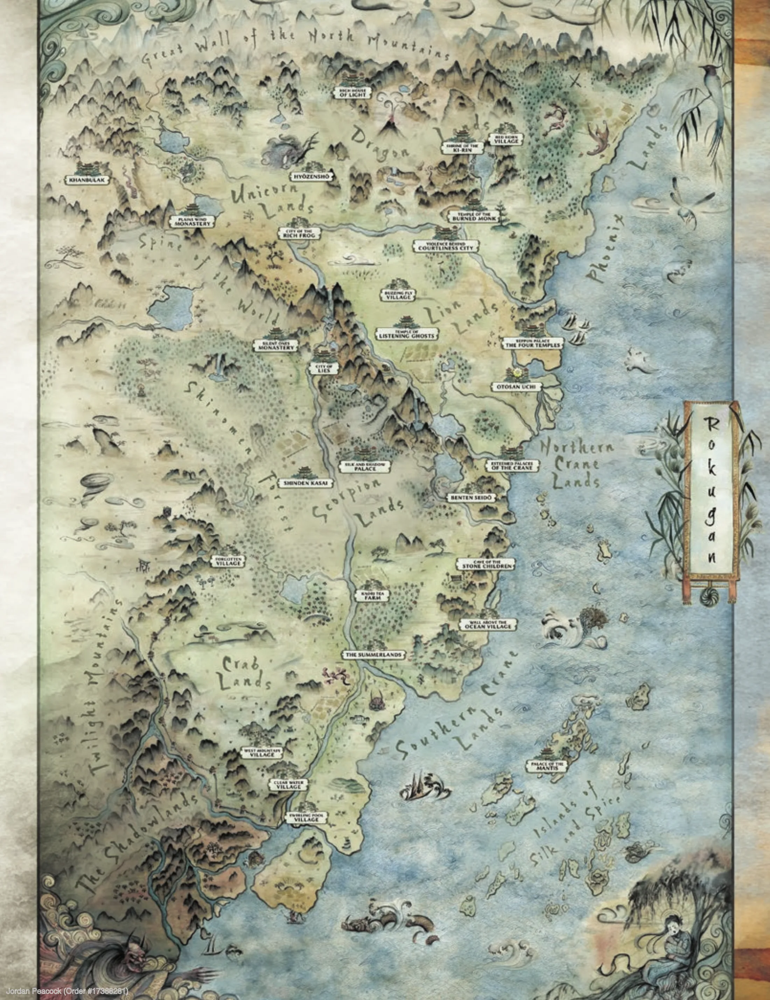

Portents & Fortunes
The mountain has been silent since the night he was born. It is beginning to stir.
A Legend of the Five Rings Chronicle

Twenty years ago, in the deep winter of the Dragon mountains, a child was born who did not cry. On his ear were seven moles set in a perfect circle, and the priest who read the sign proclaimed that the boy would reverse his family's ill fortune — and that the Wrath of the Kami, the volcano whose winter eruption is as dependable as the tide, would not wake again within his lifetime. That winter the mountain fell silent, and it has slept ever since. The Agasha have been uneasy the whole time. Now the ground is beginning to tremble again.
This is the archive of Togashi Norikage — Dragon Clan, of the Togashi Tattooed Order, a monk of the spider-marked ki — sent by his abbot into a shrinking village to watch, to listen, and to keep faith with the truth. It holds who he is, the land he walks, and the record of a chronicle only now beginning.
Atlas of Rokugan
The Emerald Empire mapped clan by clan — click into a region — with a gazetteer of the Dragon lands.
The CharacterTogashi Norikage
His dossier — rings and skills, the tattoo and the techniques, and the twenty questions that made him.
PlayCharacter Sheet
The living sheet: strife and void, honor and glory, and a Ring & Skill dice roller for the table.
ChronicleThe Chronicle
The record of play, session by session. The first tale is yet to be told.
Dramatis PersonaeDramatis Personae
The abbots, administrators, monks, and strangers whose paths cross the Dragon's road.
LoreThe Emerald Empire
The Celestial Order, Bushidō, the Dragon Clan, and the elemental imbalance troubling the land.
Behind the Veil☷ Behind the Veil
The Master's papers — premise, subplots, the cast, and the shape of the prophecy. Spoilers within; for the Game Master's eyes.